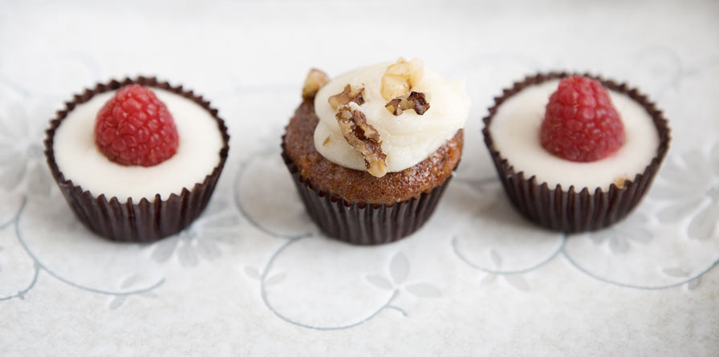

LATEST TWEET --------------------------------------LET'S BE FRIENDS! --------------------------------------For weekly finds, community recommendations, and more, like us on Facebook

Tastemakers
Feast your eyes & get recipes!Blog
News, how-tos, stories, and moreThe A-List
Handpicked, absolute favoritesContribute
We want to hear from you!----------------------------------------------------------------------------------------------------------------------------------------------------------Sign up for our newsletter to receive a handpicked selection of the best stories, recipes, and news, delivered weekly to your inbox.----------------------------------------------------------------------------------------------------------------------------------------------------------image 2012’s Best Summer CookbooksWith the best of the season coming from “orchards, farms and gardens,” NPR has put together an impressive collection of 10 summer cookbooks.How to Make Vegetable ChipsAbout a month ago, I ate almost an entire box of kale chips. My brother and I were visiting our cousin in Brooklyn, and before a very thoughtfully prepared vegan…Join us on Pinterest!If I could curate a cookbook for you, this would be it.Recipes from a Sunday SupperI could not figure out what to do with the delectable slices of Pear Cake that I brought home from this wonderful Sunday supper - eat them slowly, a little bit at…